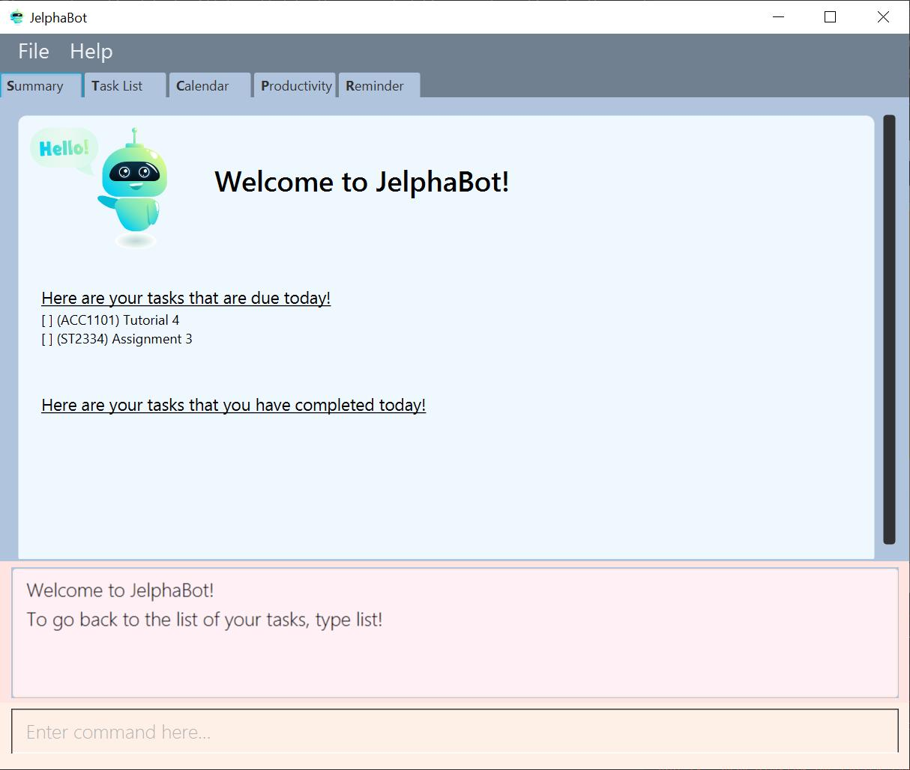

By: Team 2103T-F09-02 Since: Jan 2020 Licence: MIT
1. Introduction
Welcome to JelphaBot!
JelphaBot is designed for university students who prefer to use a desktop app for managing tasks. If you prefer to work with a Command Line Interface (CLI), JelphaBot allows you to work fast while still retaining the benefits of a Graphical User Interface (GUI). If you can type fast, JelphaBot can help you get your tasks done faster than traditional GUI apps.
The JelphaBot GUI is designed to allow you to recognise important tasks at a glance so that you can prioritise commitments and manage your time.
Interested? Jump to the Section 2, “Quick Start” to get started. Enjoy!
Preface
This section explains the usage of certain repeated symbols and icons throughout the document. Happy reading!
Symbol |
What does it mean? |
<icon image> |
sentence |
<icon image> |
sentence |
2. Quick Start
-
Ensure you have Java
11or above installed in your Computer. -
Download the latest
jelphabot.jarhere. -
Copy the file to the folder you want to use as the home folder for your JelphaBot.
-
Double-click the file to start the app. The GUI should appear in a few seconds.
Figure 1: Expected result after running `JelphaBot`
-
Type the command in the command box and press Enter to execute it.
e.g. typinghelpand pressing Enter will open the help window. -
Some example commands you can try:
-
list: lists all tasks -
addd/Assignment 1 dt/10-Mar-2020 23 59 m/CS2103T: adds a task with descriptionAssignment 1to the task list. -
delete3: deletes the 3rd task shown in the current list -
exit: exits the app
-
-
Refer to Section 4, “Features” for details of each command.
3. How to use this guide
TO BE EDITED
4. Features
Command Format
Task list commands
These command formats are applicable for the following commands:
Add Command, Edit Command, Find Command.
-
Words in
UPPER_CASEare the parameters to be supplied by the user e.g. inadd d/DESCRIPTION,DESCRIPTIONis a parameter which can be used asadd d/Assignment 1. -
Items in square brackets are optional e.g
d/DESCRIPTION [p/PRIORITY]can be used asd/Assignment 1 p/0or asd/Assignment 1. -
Items with
… after them can be used multiple times including zero times e.g.[t/TAG]…can be used ast/project,t/project t/gradedetc. -
Parameters can be in any order e.g. if the command specifies
d/DESCRIPTION p/PRIORITY,p/PRIORITY d/DESCRIPTIONis also acceptable.
4.1. Getting Started
[ Placeholder image for labelled main screen to introduce navigation ]
JelphaBot has four tabs, Task List, Calendar, Productivity and Summary.
You can switch between tabs anytime by pressing Ctrl + tab on your keyboard to move to the tab on the right.
If you are already on the rightmost tab, it wraps around to the leftmost tab.
Commands can be entered into the input box at the bottom.
4.1.1. Saving the data
JelphaBot automatically saves your data whenever you make a change. There is no need to save manually.
4.1.2. Viewing help : help
If you can’t recall the command you need, the help command opens a help popup window which links to this user guide.
Format: help

Figure 2: Example of an expected result after running `help`
4.2. Exiting the program : exit
You can exit the program anytime by entering the exit command directly from any page.
Format: exit
4.3. Managing Tasks
JelphaBot allows you to track and manage your tasks. You can view and sort all your tasks from the Task List page.
4.3.1. Reading the task list
The task list is formatted so that you can distinguish urgent tasks at first glance. The start of every task is labelled with a module code so that you can visually categorize them. Tasks are tagged according to their importance:
-
Default
-
High Priority
-
Low priority
Tasks marked as low priority will be italicized to denote optional tasks.
Tasks are marked as high priority will be bolded to denote important tasks.
You can also tag tasks with additional information. To read more about tags, go here
4.3.2. Adding a task: add
Add a task to your task list.
Format: d/DESCRIPTION dt/DATETIME m/MODULE_CODE [p/PRIORITY] [t/TAG]…

Figure 3: Example of an expected result after running `add`
| A task can have any number of tags (including 0) |
Examples:
-
add add d/Assignment 1 dt/Jan-01-2020 23 59 m/CS3230 p/1 -
add add d/Project TP dt/Jan-01-2020 23 59 m/CS2103T p/1 t/pair work
4.3.3. Listing all tasks : list
List all tasks in your task list. Optional arguments can be added to dictate sorting order for your tasks.
Format: list [SORTING_ORDER]

Figure 4: Example of an expected result after running `list`
Group tasks by Date : list date
Group your tasks into the following categories:
-
Pinned
(Pinned tasks will always be displayed at the top. To read more about pinning tasks, go here) -
Overdue
(Shows tasks which are uncompleted and past their due date) -
Due Today
(Shows tasks due by the end of the day) -
Due This week
(Shows tasks due by the end of the week, defined as before the next upcoming Monday) -
Due Sometime
(Shows all other tasks that do not fit into prior categories)
Group tasks by Date : list module
Groups tasks based on their defined module code. Modules will be presented in alphabetical order.
4.3.4. Locating tasks by name: find
Finds tasks in your task list whose description contain any of the given keywords.
Format: find KEYWORD [MORE_KEYWORDS]

Figure 5: Example of an expected result after running `find`
Examples:
-
find assignment
ReturnsAssignment 1andassignment task -
find Tutorial Project MidTerm
Returns any task having descriptions ofTutorial,Project, orMidTerm
4.3.5. Editing a task : edit
Edit an existing task in your task list.
.
Format: edit INDEX [d/DESCRIPTION] [dt/DATETIME] [m/MODULE_CODE] [p/PRIORITY (-1, 0, or 1)]
[t/TAG]…

Figure 6: Example of an expected result after running `edit`
Examples:
-
edit 1 m/CS2105 d/Tutorial 2
Edits the moduleCode of the 1st task to becs2105and description toTutorial 2respectively. -
edit 2 dt/Jan-2-2020 23 59 t/
Edits the date and time of the 2nd task to beJan-2-2020 23 59and clears all existing tags.
4.3.6. Completing a task : done
Marks a task in your task list as done.
Format: done INDEX

Figure 7: Example of an expected result after running `done`
4.3.7. Deleting a task : delete
Delete a task from your task list.
Format: delete INDEX

Figure 8: Example of an expected result after running `delete`
Examples:
-
list
delete 2
Deletes the 2nd task in the task list. -
find Betsy
delete 1
Deletes the 1st task in the results of thefindcommand.
4.3.8. Clearing all task entries : clear
Clears all entries from your task list.
Format: clear

Figure 9: Example of an expected result after running `clear`
4.3.9. Pin Important tasks : pin
You can pin important tasks to the top of the task list with the pin command.
Pinned tasks will always be displayed in the Pinned Tasks group in the task list.
Trying to pin a task that is already pinned will unpin it.
4.3.10. Show all completed tasks : show-completed
You can display all the tasks in your task list that have been completed.
4.3.11. Show all incomplete tasks: show-incomplete
You can display all the tasks in your task list that are currently incomplete.
4.3.12. Sort tasks : sort [coming in v2.0]
You can change how tasks are sorted with the sort command.
Format: sort SORTING_ORDER
Valid SORTING_ORDER values include date, module, and priority.
5. Set Reminders and Notifications [coming in v2.0]
5.1. Adding reminder : reminder
Adds a reminder to your specified task and reminds you of the task if the current time is within the time-frame specified
by you.
Format: reminder INDEX rd/DAYS rh/HOURS
-
Adds a reminder to the task which is at the specified
INDEX. -
The index refers to the index number shown in the displayed task list.
-
The index must be a positive integer 1, 2, 3, ….
-
DAYSrefers to the number of days before the due date of the task when you want to be reminded of it. -
HOURSrefers to the number of hours before the due date of the task when you want to be reminded of it.
6. Productivity Tracking
6.1. Track productivity : productivity
Apart from the function to switch tabs by pressing Ctrl + tab on your keyboard, you can enter the command productivity
to manually switch to the productivity tab.
Unless the task has been marked as complete, you can repeatedly start and stop the timer to continue timing the task.
Format: productivity

Figure #: Expected result after running `productivity`
6.1.1. Starting timer for a task : start
Starts timer running for a task.
Format: start INDEX

Figure #: Expected result after running `start`
6.1.2. Stopping timer for a task : stop
Stops running timer for a task.
Format: stop INDEX

Figure #: Expected result after running `stop`
6.1.3. Receiving encouragement and criticism
JelphaBot automatically tracks the user’s productivity in a day and outputs the appropriate response to the user’s
achievements and task completion rate.
There is no need to manually ask for compliments or criticism.
7. Calendar
7.1. Integrating calender : calendar
Apart from the function to switch tabs by pressing Ctrl + tab on your keyboard, you can enter the command calendar
to manually switch to the calendar tab.
The calendar panel will then show the user’s schedule for the current month with today’s date
highlighted.
Format: calendar
7.1.1. Change month and year view of Calendar : calendar
Displays the tasks due on specified date, while highlighting that day on the calendar.
The task list panel on the left will display the tasks due today.
Format: calendar MONTHYEAR
Examples:
-
calendar Apr-2020Displays month of April in the year 2020 in the calendar panel on the right.
7.2. Show tasks due on specific date : calendar
Displays the tasks due on specified date, while highlighting that day on the calendar
Format: calendar DATE
Examples:
-
calendar Jan-1-2020 -
calendar Jan/1/2020
Highlights 1st of January in the calendar panel on the right and displays the corresponding tasks due on the left.
8. Morning call/Night debrief
Displays the tasks to be completed within the day (Morning Call), and the tasks that have been completed so far (Night Debrief)
Morning Call and Night Debrief are separate windows that will open on app startup and exit respectively.
10. FAQ
Q: How do I transfer my data to another Computer?
A: Install the app in the other computer and overwrite the empty data file it creates with the file that contains the data of your previous Address Book folder.
11. Command Summary
-
Help :
help -
Add
[d/DESCRIPTION] [dt/DATETIME] [m/MODULE_CODE] [p/PRIORITY] [t/TAG]…
e.g.add add d/Project TP dt/Jan-01-2020 23 59 m/CS2103T p/1 t/pair work -
List :
list -
Find :
find KEYWORD [MORE_KEYWORDS]
e.g.find Tutorial Assignment -
Edit :
edit INDEX [t/TAG]…
e.g.edit 1 m/CS2105 d/Tutorial 2 -
Done :
done INDEX
e.g.done 1 -
Delete :
delete INDEX
e.g.delete 3 -
Clear :
clear -
Exit :
exit -
Show Completed Tasks:
show-completed -
Show Incomplete Tasks:
show-incomplete -
Reminder :
reminder INDEX rd/DAYS rh/HOURS
e.g.reminder 2 rd/1 rh/1 -
Productivity :
productivity -
Timer :
start INDEXorstop INDEX
e.g.start 1orstop 1 -
Calendar :
calendar -
Calendar Date :
calendar DATE
e.g.calendar Jan-1-2020 -
Change Calendar View :
change MONTHYEAR
e.g.changeCalendar Apr-2020